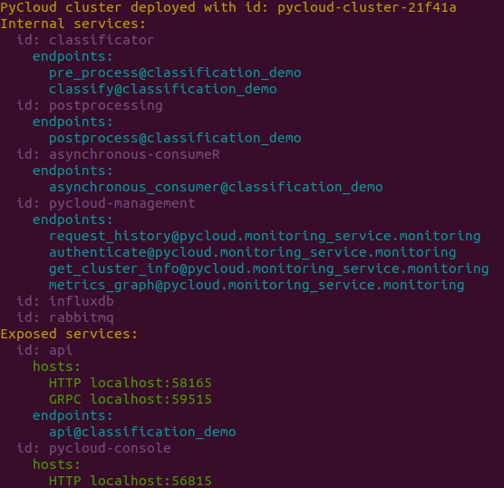

Welcome to PyCloud!
PyCloud is a solution for creating scalable cloud deployments with Python. It translates local Python code into cluster of connected services on kubernetes or docker, with minimal amount of extra logic (no more handcrafting tons of yaml files).
That allows easy and fast transformation of algorithms/AI code into cloud environment.
It gives flexibility not known before - adjusting architecture/redeployment for better scalability can be done in minutes.
Getting started
- Download PyCloud installer from PyCloud.ai
- Execute commands:
virtualenv .venv -p python3 . .venv/bin/activate chmod a+x pycloud-install*.sh ./pycloud-install*.sh - After installation
pycloudcliscript is available in current folder. - Check and download one of the examples on github
- Deploy it on local docker server with command:
./pycloudcli deploy docker --file example.py - Check the deployment summary for api and monitoring console urls.
API reference
To start your adventure with PyCloud you need to initialize PyCloud object instance:
CLOUD = PyCloud.get_instance()
PyCloud is providing annotations, which will allow you to adjust your application architecture with minimal effort. Moreover PyCloud provides functions to communicate between endpoints both synchronously and asynchronously.
@CLOUD.endpoint
You can use this annotation to create new endpoint in microservice architecture.
@CLOUD.endpoint has two parameters:
service_id - this enable you to collect chosen endpoints in one service
protocols - list of protocols which will be used to expose your endpoint.
Currently PyCloud support protocols: HTTP, GRPC, AMQP
To make your already implemented endpoint available via GRPC protocol you only need to add this annotation:
@CLOUD.endpoint("api", protocols=["GRPC"])
def get():
"""Endpoint implementation"""
return result
If you want to have more endpoints available in the same service you can simply add @CLOUD.endpoint to next function (with the same service_id="api"):
@CLOUD.endpoint("api", protocols=["GRPC"])
def post():
"""Endpoint implementation"""
return result
This gives you great flexibility to choose which parts of application should be independent. With combination of deployment in Kubernetes cluster this gives a possibility to scale 'bottlenecks' of your application.
To add new, independent endpoint, just add @CLOUD.endpoint annotation with different service_id:
@CLOUD.endpoint("processing", protocols=["GRPC"])
def processing():
"""Endpoint implementation"""
return result
@CLOUD.init_service
Sometimes there is a need to initialize service with some data. For this purpose you can use @CLOUD.init_service annotation.
@CLOUD.init_service("publish-service")
def initialize_publisher():
return {"data": "something"}
Than you can retrieve data:
@CLOUD.endpoint("publish-service", protocols=['AMQP'])
def publish(result):
data = CLOUD.initialized_data()
LOGGER.info("Result is : {}, and the data is: {}".format(result, data))
CLOUD.call()
This method is used to combine to endpoints synchronously. Here is example of API endpoint which is taking
image and sending it synchronously to second service called pre_process. Please notice that with this
approach you are able to scale independently your api and pre_process services.
@CLOUD.endpoint("api", protocols=["GRPC"])
def api(image):
result = CLOUD.call(pre_process, image)
return result
CLOUD.message()
Alternative to CLOUD.call() is asynchronous CLOUD.message().
First step is to create asynchronous consumer endpoint based on AMQP - Advanced Message Queuing Protocol
@CLOUD.endpoint("asynchronous-consumer", protocols=["AMQP"])
def asynchronous_consumer(message):
LOGGER.info("Just received asynchronous message :%s", message)
Second step is creation of endpoint which will use above asynchronous endpoint:
@CLOUD.endpoint("postprocessing")
def postprocess(results):
""" Convert model output to string label"""
index = np.argmax(results)
LOGGER.info("Detected class number: %d", index)
label = IMAGENET_LABELS[index]
CLOUD.message(asynchronous_consumer, label)
return label
Console
pycloud-console is monitoring tool which will allow you to better understand
traffic and services graph in your deployment
After starting your PyCloud application you will get terminal output similar to this one: 
So you can see exposed endpoints of your application and address of pycloud-console
pycloud-console without traffic:
At the top you can see Events and you can choose time frame for monitoring.
On the left you can see available services and their replication.
In the center there is a graph of your endpoints. If two endpoints have the same color, it means that they belong to the same service. They will talk to each other using local function calls instead of network connection (this does not apply to CLOUD.message which will always go through RabbitMQ)
pycloud-console after sending traffic:
As you can see new events are visible at the top.
Moreover endpoints size is scaled depending on duration of function.
To get more information about endpoint, just click on one:
To get more information about connection, click expand:
If you want to see or disable additional information for all services/connections,
use Endpoint metrics and Edge metrics options:
If you are interested only in some specific fragment of the graph, you can move
around services and zoom chosen fragment:

CLI
$ pycloud -h
usage: pycloud [-h] {version,deploy,update,ls,clean} ...
positional arguments:
{version,deploy,update,ls,clean}
commands
version display PyCloud and PyCloud-cli versions
deploy deploy PyCloud services
clean remove existing PyCloud cluster
optional arguments:
-h, --help show this help message and exit
$ pycloud deploy -h
usage: pycloud deploy [-h] --file FILE [--dev-mode DEV_MODE] {docker,gke}
positional arguments:
{docker,gke} Deploy to one of the possible environments
optional arguments:
-h, --help show this help message and exit
--file FILE, -f FILE path to file with PyCloud deployment specification
--dev-mode DEV_MODE development mode